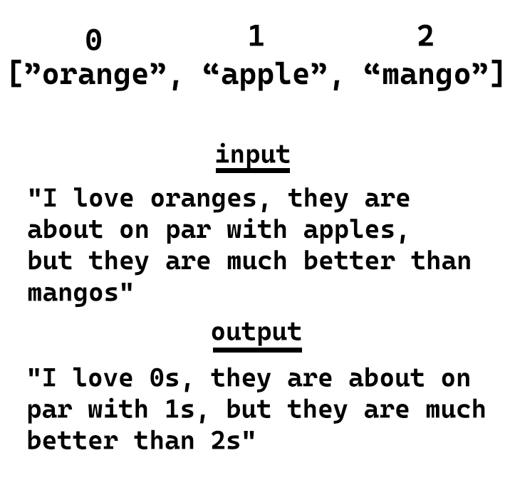

Storage space is valuable. Whether it’s memory on someone’s computer that needs to be preserved to keep it running, or space on a drive to keep it from being full. Compression is the act of taking some sort of data and storing it in a form that takes up less space than the original form. Usually this is done by finding out what patterns in the data repeat, and then finding ways to represent those repetitions in more compact forms. Compression can be done in tons of clever ways for various different types of data, but an incredibly common form is text compression.
Encoding as compression
Some people consider some forms of Encodings to be compression. This is a reasonable perspective, in fact many forms of encodings are designed specifically to support compression (such as JPEG).
Text
For text generally speaking you can look for common patterns and then replace them in the text to make it shorter. For example:

Since each character is roughly 1 byte, we saved 13 bytes.
Images
Images are another common format that requires compression. With images however there are 2 primary types lossless and lossy.
Lossless
Lossless formats are what we’re used to. They take in some data, compress it, and at the end you can decompress it to get back exactly the data you put in. This is handy for things like text (you usually don’t want just some of a text file), or images that need high fidelity. PNG is a format that is a lossless form of compression.
Lossy
Lossy is unlike the systems we’ve seen before. With typical compression we want to get back exactly what we had before we compressed it. With lossy compression we want to be “close”. Imagine you have a large image on a small screen, let’s say a 1920x1080px image on a 480x720p screen. If we were to resize the image and in the process remove 1/8 of the pixels and just stich together a smaller but “close enough” version of the image, most people wouldn’t notice.
Formats like JPG are lossy. They basically create versions of images that are “close enough” to the original source images. This can cause some issues like artifacts, a good quick explainer about this can be found here as a video
Base 64
There are multiple different number systems that exist. For the most part people use base 10, which is where numbers go from 0-9, then you add a digit, and then each successive digit is a multiple of 10 (100, 1000, etc.).
There are several other number systems used in computer science. Base 2 is where you go from 0-1 and then shift up a digit where each digit is a power of 2 (i.e. 0001 is 1, 0010 is 2, 0100 is 4, 1000 is 8 etc.). Or hex which is base 16 where you go from 0-9 then letters A-F.
One other interesting number system we use is base 64. The reason base 64 is handy is because it gives you short text representations for lots of data. This is why in many database systems images are not stored as images. The metadata is stored elsewhere for each image, and the images themselves are stores by taking all the data that makes up the pixels and converting it to base64.
For example if we take the 5x5 version of this image:
{kind=link}

Can be stored as:
With this text representation the text can now be further compressed
Videos & Audio
Text and images are important, and should be compressed since it’s wasteful not to, however videos and audio are some of the largest files you will encounter on devices. This is because inherently the quality is tied to file size. The greater the quality of video and audio the more you need to sample.
Sampling
Sampling is basically the frequency you measure at. Obviously when videos and audio is created it needs to be recorded, and in order to record the camera and/or microphone needs to know how quickly it should be capturing information. With Video this is usually in fps (frames per second) where you tell the camera to record for example 30 frames per second (1 frame of video captured every ~33 miliseconds!).
Audio is sampled even more agressively than video, typically it’s sampled in kHz, and usually ~48kHz (48,000 samples/second or 1 sample per ~28 microseconds which is 1,000,000 smaller than a second).
The cost of sampling
So uncompressed if we took a 720p video (1280x720 pixels or 921,600 pixels) at 30fps, using RGB colours (3 8 bit numbers representing the amount of red, green, blue in a frame), and 44.1kHz audio at 16-bit depth (1,411,200 bits per second) then per second we are storing ~ 83.12 megaBytes per second:
Audio + video = total per second
(44,100 samples x 16 bits per sample x 2 channels / 8 bits per byte) + (921,600 pixels * 3 bytes per pixel * 30 frames per second) = total per second
(176,400 bytes) + (82,944,000 bytes) = 83,120,400 bytes/second
83,120,400 bytes per second / 1000 bytes per kiloByte / 1000 kiloBytes per megaByte = 83.12 MegaBytes per secondThat might not sound like a lot, but for a 1 minute video that’s 4.987 Gigabytes or 2.9922 TeraBytes per hour. So if you had a shop with some security cameras and you wanted to record in 720p with 44.1kHz 16-bit audio you would end up with 71.8128 TeraBytes per day, or 26.211672 PetaBytes a year. If we were to buy the largest drive I found on memory express (this one) it’s about 2,127 and for a year it would be ~786,350.16. This would never be sustainable for video hosting services. To put this in perspective there’s 8760 hours per year, and YouTube has [271,330 hours per **day**](https://www.wyzowl.com/youtube-stats/#:~:text=Around%203.7m%20new%20videos,average%20length%20of%204.4%20minutes.) being uploaded (~24 million a day, or ~$9 billion a year). So how do we make these smaller?
Codecs
Codecs are the name given to the systems that are used to encode and decode video files. There are tons of codecs, and tons of variants of codecs that substitute different parts of the compression -> encoding -> decoding pipeline
Some common codecs are:
Why not compress everything?
Most things these days are compressed, but you might not always want compression. Compression helps save space, this can be important where space is limited, or where the amount of information sent matters (i.e. over a network). But, this does comes with a few potential tradeoffs.
| Pros | Cons |
|---|---|
| Saves space | Compression algorithms can be intense and take a while to compute |
| Can be faster to load over a network | Since it’s a special format you need a program to decompress it which can take time and lots of resources |
So if you have an incredibly weak computer, but a lot of storage, it might be worth trading off the loss of storage space for less computing power needed. Alternatively if you don’t have access to install the software to read compressed files, you may be stuck with uncompressed formats.
Compression systems
Most real world compression systems are based on the encoding they use. But here are a few examples you can look at:
Text
Algorithms that make up common compression systems
- Huffman Coding
- LZ77/LZ1
- Deflate
Common compression systems (Use deflate, huffman coding, and LZ77/LZ1)
- Gzip; A generic compression system used in most browsers and applications
- Brotli; A webpage optimized compression system
Image
- JPG; Very common lossy image compression
- This video
- These two videos from computephile
- This set of articles
- PNG; Common lossless image format that also supports transparency
- Base64; A text-based way of storing image data
A good broad topic video can be found here
Video
- MPEG; Set of formats used for videos (mpeg-4 is also known at
.mp4files) - h.264; THe encoding used for most videos on the web today
Most commonly videos are MPEG-4 (.mp4) using a h.264 codec to encode the data. A good broad topic video can be found here